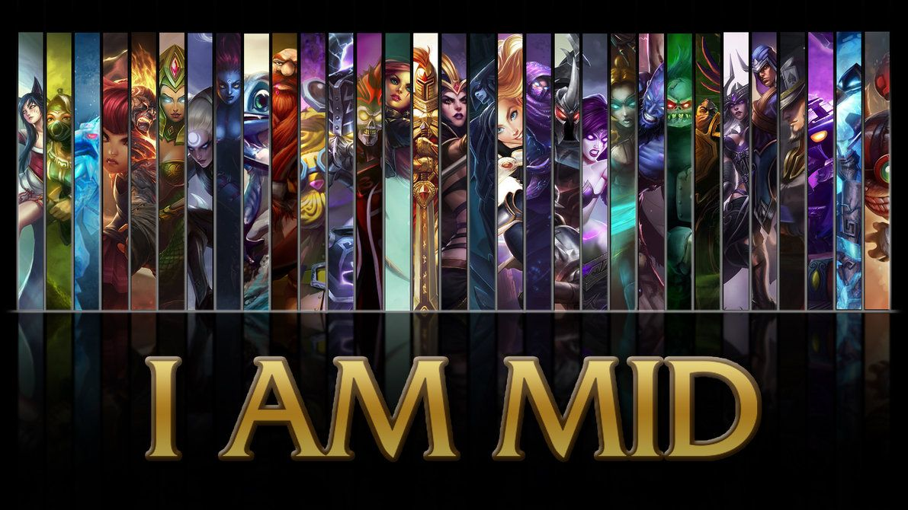

La línea de mid es la que más cerca está de la gran mayoría de objetivos que hay en partida: misma distancia a ambos monstruos neutrales más importantes, orientación para balancear el mapa hacia el lado que convenga, línea más corta en cuanto a longitud y, por tanto, con más impacto por parte de los junglas. Entonces, lo que ocurra tiene impacto directo en el resto de la grieta, por pequeño que sea: de una torre o una kill hasta un ward colocado en jungla rival o una rotación que te haga la fase de líneas más asequible..
Cómo conseguirlo es, posiblemente, el apartado más amplio, debido a la gran cantidad de campeones, composiciones, y estrategias. Desde el punto de vista del draft, la manera más sencilla para ello es la de un pick muy dominante en línea (Syndra es un ejemplo, al igual que el resto de asesinos de daño físico) junto con un jungla muy agresivo en early para ganar todos los 2vs2 junto a su mid, y de ahí trasladar esa ventaja (de farm, de summoners, de placas de la torre) a la línea lateral que mejor convenga. También es importante las elecciones tanto de top laner como el support, pues ambos roles presentan personajes que pueden apoyar a la línea central para conseguir esta ventaja. (Ornn con su definitiva, Nautilus o Leona por su dominancia en línea y su contribución de cc).
¡Todo esto lo puedes descubrir dentro del juego, Animate!